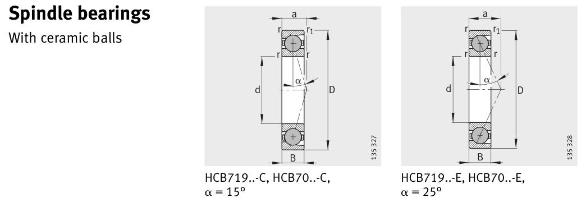

Original catalogue drawing - FAG Schaeffler HR 1, page 300

Scanned from the manufacturer catalogue page listing this part number. All part numbers printed on that table share the same drawing.
Scale cross-section
Blue = inner / outer ring, yellow = rolling element. Drawn to scale from this part's own
dimensions for selection reference only - not a manufacturing or assembly drawing.
Dimension table (mm / inch)
Symbol
Dimension
mm
inch
d
Bore diameter
130
5.1181
D
Outside diameter
200
7.874
B
Inner-ring / bearing width
33
1.2992
r
Chamfer (min)
2
0.0787
Notes
Weights are given in kg. Load ratings are shown in both the original catalogue units and the converted value (1 N = 0.2248 lbf). Data is provided for selection reference only - confirm against the latest official catalogue before ordering.
Main dimensions
Bore d (mm)
130
Outside dia. D (mm)
200
Width B (mm)
33
Load ratings & speeds
Basic dynamic load rating Cr (lbs)
22481
Basic static load rating Cor (lbs)
23380
Basic dynamic load rating Cr (N)
100000
Basic static load rating C0r (N)
104000
Fatigue limit load Cur (N)
6100
Limiting speed nG (rpm)
7,500
Effective load centre a (mm)
39
Weight
Weight (kg)
3.21
Mounting dimensions (fillets / shoulders)
Housing fillet r max (mm)
2
Chamfer r1 min (mm)
2
Shaft shoulder da (mm)
142
Housing shoulder Da (mm)
189
Housing fillet ra max (mm)
2
Housing fillet ra1 max (mm)
1
Bearing life (ISO 281 basic rating life)
C / P
Equivalent load P (N)
L10 (106 rev)
L10h at 2,500 rpm
4
25,000
64
427
6
16,667
216
1,440
8
12,500
512
3,413
10
10,000
1,000
6,667
15
6,667
3,375
22,500
Basic rating life per ISO 281: L10 = (C/P)3 with C = 100,000 N. Hours = L10 x 106 / (60n). Life-modification factors for lubrication, contamination and temperature (aISO) are not included.
Source & traceability
Brand
FAG
Source catalogue
FAG / Schaeffler Rolling Bearings HR 1
Catalogue page
p.300 (dimensions)
Load ratings in newtons, fatigue limit load Cur, limiting speed nG and reference speed nB.
Send us the quantity you need and we will come back with price and
lead time, normally within 24 hours. Equivalent parts from other brands can be quoted at the same time.